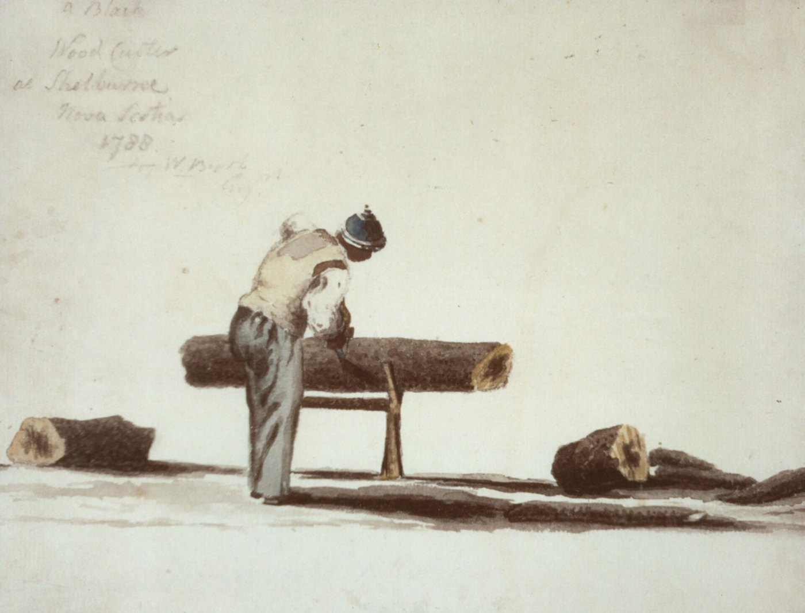

S2 · Black Loyalists: A Promise of Land
- What are push and pull factors? Give one of each.
- What were the Highland Clearances?
- What percentage of Canada’s population were immigrants in 2021?
Answer key
- Push: what makes people leave (war, poverty); pull: what attracts them (jobs, safety).
- The removal of families from their land in the Scottish Highlands, often to make room for sheep.
- 23.0%, almost one in four, the largest proportion since Confederation.
- discover the story of the Black Loyalists
- use the passive voice to talk about promises and rights
- explain why some newcomers chose to leave again
Look at the painting
Describe, then interpretCore
- What is the man doing?
- What can you say about the place and the season?
- Why is this small sketch important? Read the caption.
Answer key
- He is cutting wood (cordwood) on a sawhorse.
- An open, empty place, probably in winter; the land had to be cleared.
- It is the earliest known image of an African Nova Scotian.
During the American War of Independence (1775 to 1783), the British promised freedom to enslaved Africans who joined their side. When the British lost, more than 3,500 Black Loyalists arrived in the Maritimes, in the early 1780s. They were promised land and economic security. Many settled at Birchtown, near Shelburne, in Nova Scotia.
The promises were broken. Many received no land, or poor land. They were paid much less than white labourers. In July 1784, in Shelburne, a riot broke out against them. They could not vote or serve on juries.
Sources: Dalhousie University, Isaac Saney, “Remembering the Sierra Leone Migration, 230 years later”, 25 March 2022; Nova Scotia Archives, African Nova Scotians in the Age of Slavery and Abolition.
The Black Loyalists sent a representative, Thomas Peters, to London. His petition explained that people of colour were
The Sierra Leone Company offered them passage and land in Africa. On 15 January 1792, 15 ships left Halifax for Sierra Leone with 1,196 Black Nova Scotians, some 540 families. In Sierra Leone, they helped found the city of Freetown.
UnderstandCore
- What were the Black Loyalists promised?
- Give two examples of broken promises.
- Which rights were they refused?
- What did 1,196 of them decide to do in 1792?
Answer key
- Freedom, land and economic security.
- No land or poor land; lower wages; violence in Shelburne in 1784.
- The right to vote and to serve on juries.
- They sailed from Halifax to Sierra Leone and helped found Freetown.
The passive voiceCore
Rewrite in the passive.
- The British promised them land. → They
- Officials refused them the vote. → They
- Colonial employers paid them low wages. → They
Answer key
- They were promised land.
- They were refused the vote.
- They were paid low wages.
Reciprocal benefits?Stretch
A member of the colonial assembly, Alexander Howe, called the Black Loyalists “the principal source of labour and improvement” in the colony (quoted by Isaac Saney). What does this tell you about what they gave Nova Scotia? What did they receive in return? Write 80 words with whereas, yet, in return.
Answer key
Model: The Black Loyalists cleared the land and built the colony; they were its main workforce. Yet, in return, they received little land, low wages and no political rights, whereas white Loyalists were given far more. The exchange was unequal, so many chose to leave for Sierra Leone.
Expanding your vocabulary
| Word | Meaning | Example |
|---|---|---|
| a Loyalist | a colonist who stayed loyal to Britain during the American Revolution | Black Loyalists fought for the British. |
| to keep / break a promise | to do / not do what you said | The government broke its promise of land. |
| a petition | a formal written request to an authority | Thomas Peters took a petition to London. |
| prejudice | an unfair opinion about a group | They faced prejudice in Shelburne. |
| to settle | to make a new home in a place | Many settled in Birchtown. |
| a jury | a group of citizens who decide a trial | They could not serve on juries. |
Petit glossaire en français
Loyalist : loyaliste · break a promise : manquer à sa promesse · petition : pétition · settle : s’installer · jury : jury
Explain in French, to a friend who has never heard of them, who the Black Loyalists were and why many left Nova Scotia (five sentences).
- Learn the vocabulary.
- Write Thomas Peters’s short speech in London (80 to 100 words), using three passive forms.
- Look at the website of the Black Loyalist Heritage Centre and note one fact about Birchtown today.